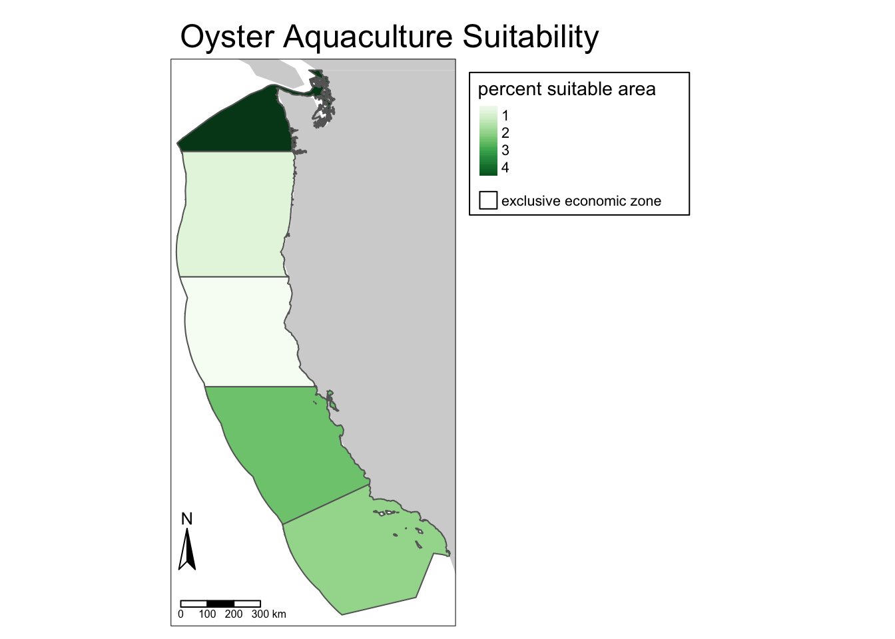
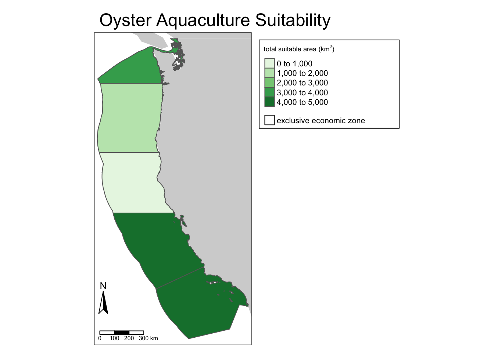
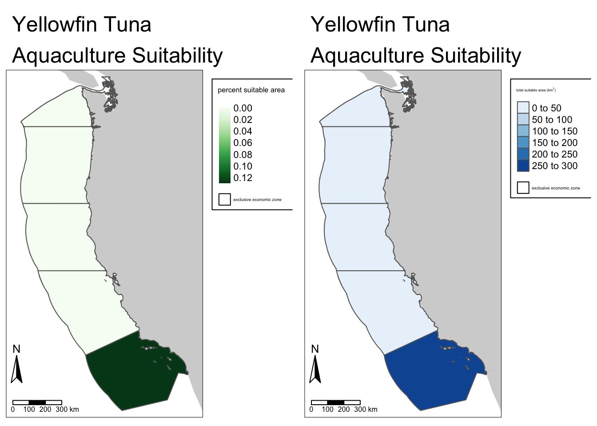

Code
# load required packages
library(stars)
library(sf)
library(tidyverse)
library(ggplot2)
library(terra)
library(raster)
library(here)
library(tmap)
library(usmap)December 15, 2023
Github: https://github.com/charliecurtin1/aquaculture-suitability-CA
Marine aquaculture has the potential to play an important role in the global food supply as a more sustainable protein option than land-based meat production.1 Gentry et al. mapped the potential for marine aquaculture globally based on multiple constraints, including ship traffic, dissolved oxygen, and bottom depth .2
Aquaculture doesn’t only serve to enhance food supply directly, however. Beyond commercial aquaculture, the West Coast of the US contains potential for restoration and enhancement aquaculture. NOAA Fisheries3 describes restoration aquaculture as the rearing of fish to increase stock of threatened or endangered species, and enhancement aquaculture as the rearing of fish to support commercial or recreational fisheries through the increasing of fish stock.
For this analysis, we will determine which Exclusive Economic Zones (EEZ) on the West Coast of the US are best suited to developing marine aquaculture for several species of oysters.
Based on previous research, we know that oysters needs the following conditions for optimal growth:
We will use average annual sea surface temperature (SST) from the years 2008 to 2012 to characterize the average sea surface temperature within the region. The data we are working with was originally generated from NOAA’s 5km Daily Global Satellite Sea Surface Temperature Anomaly v3.1.
To characterize the depth of the ocean we will use the General Bathymetric Chart of the Oceans (GEBCO).3
We will be designating maritime boundaries using Exclusive Economic Zones off of the west coast of US from Marineregions.org.
Below is an outline of the steps in this workflow.
To start, we need to load all necessary data and make sure they have the same coordinate reference system. We’ll reproject any layers not on the same coordinate reference system.
## read in data
# create a filelist of sea surface temperature rasters
filelist <- list.files(here("posts", "aquaculture-suitability", "data"),
pattern = "average_annual*",
full.names = TRUE)
# create a raster stack of SST rasters
sst_stack <- rast(filelist)
# read in west coast EEZ shapefile
wc_eez <- st_read(here("posts", "aquaculture-suitability", "data", "wc_regions_clean.shp"), quiet = TRUE)
# read in bathymetry data
depth <- rast(here("posts", "aquaculture-suitability", "data", "depth.tif")) Next, we need process the SST and depth data so that they can be combined. In this case the SST and depth data have slightly different resolutions, extents, and positions. We don’t want to change the underlying depth data, so we will need to resample to match the SST data using the nearest neighbor approach. We’ll stack the rasters and find the mean sea surface temperature from 2008-2012 and convert values from Kelvin to Celsius using simple raster arithmetic. Next, we’ll use terra::project() to crop and change the extent of the depth raster to the SST raster.
# find the mean SST from 2008-2012 as a new raster
mean_sst <- app(sst_stack,
fun = "mean",
na.rm = TRUE)
# convert the mean SST raster from Kelvin to Celsius
mean_sst <- mean_sst - 273.15
# crop the depth raster to the extent of the sst data and resample so that the resolutions match
depth <- project(depth, mean_sst,
method = "near")In order to find suitable locations for marine aquaculture, we’ll need to find locations that are suitable in terms of both SST and depth. We’ll reclassify the depth and SST rasters according to ideal oyser depth and temperature ranges. Suitable cells will be reclassified to have a value of 1, while cells outside of the ranges will have a value of NA. Then, we’ll multiply the two rasters together. Cells that satisfy both the depth and SST ranges will receive a value of 1, while all other pixels will receive a value of NA.
## find suitable locations for oyster aquaculture by reclassifying the depth and SST rasters
# create matrices of ideal ranges for depth and SST to reclassify rasters
rcl_sst <- matrix(c(11, 30, 1,
-Inf, 11, NA,
30, Inf, NA),
ncol = 3,
byrow = TRUE)
rcl_depth <- matrix(c(-70, 0, 1,
-Inf, -70, NA,
0, Inf, NA),
ncol = 3,
byrow = TRUE)
# reclassify the rasters based on ideal conditions
mean_sst_rcl <- classify(mean_sst,
rcl = rcl_sst)
depth_rcl <- classify(depth,
rcl = rcl_depth)
# define our function to multiply values in the two rasters
rast_multiply <- function(x, y) {
(x * y)
}
# stack the rasters
suitability_stack <- c(depth_rcl, mean_sst_rcl)
# multiply each cell in one raster by the corresponding cell in the other raster. Our output should only include locations that satisfy both the depth and SST requirements for oysters
oyster_suitability <- lapp(suitability_stack, fun = rast_multiply)We want to determine the total suitable area within each EEZ in order to rank zones by priority. To do so, we need to find the total area of suitable locations within each EEZ. We’ll select suitable cells within each EEZ and find the total suitable area and percent suitable area within each EEZ. To do this, we’ll need to rasterize the EEZ vector data by region, so cells will now be represented by region name.
# rasterize EEZs by region
region_rast <- rasterize(wc_eez, depth, field = "rgn")
# find area of cells in each region
areas <- expanse(oyster_suitability, unit = "km", zones = region_rast)
# join area values to each EEZ
wc_eez_merge <- merge(wc_eez, areas,
by.x = "rgn",
by.y = "zone",
all.x = TRUE) %>%
mutate(p_area = (area/area_km2) * 100) # find the percentage suitable area in each regionNow that we have results, let’s map them. We’ll create two maps: one showing the percent suitable area in each EEZ, and one showing the total suitable area in each EEZ.
## map percent suitable area for oyster aquaculture in each EEZ
# load in World data from tmap for our basemap
data("World")
basemap <- tm_shape(World, bbox = st_bbox(wc_eez_merge)) +
tm_polygons(col = "lightgray",
lwd = 0)
# map the percent suitable area over our basemap
oyster_percent_area <- basemap +
tm_shape(wc_eez_merge) +
tm_polygons(col = "p_area", # color polygons by percent area
palette = "Greens",
title = "percent suitable area",
style = "cont") + # make the legend graphics continous
tm_layout(main.title = "Oyster Aquaculture Suitability",
legend.outside = TRUE,
legend.frame = TRUE) +
tm_add_legend(type = "fill", # manually add legend symbol for EEZs
border.col = "black",
title = "",
labels = c("exclusive economic zone"),
col = "transparent") +
tm_compass(position = c(-.05, .1)) +
tm_scale_bar(position = c(0.02, 0),
breaks = c(0, 100, 200, 300)) # change scale bar breaks
# save the map output
tmap_save(oyster_percent_area, filename = here("images", "oyster_percent_area_map.png"), width = 10, height = 8, units = "in", dpi = 300)Map saved to /Users/charliecurtin 1/Documents/MEDS/personal_school_docs/charliecurtin1.github.io/images/oyster_percent_area_map.pngResolution: 3000 by 2400 pixelsSize: 10 by 8 inches (300 dpi)
# map total suitable area for aquaculture in each EEZ
oyster_suitable_area <- basemap +
tm_shape(wc_eez_merge) +
tm_polygons(col = "area", # color polygons by total suitable area
palette = "Greens",
title = expression(paste("total suitable area (", "km"^"2", ")"))) + # changes legend title and adds the superscript to "km"
tm_layout(main.title = "Oyster Aquaculture Suitability",
legend.outside = TRUE,
legend.frame = TRUE) +
tm_add_legend(type = "fill", # manually add legend symbol for EEZs
border.col = "black",
title = "",
labels = c("exclusive economic zone"),
col = "transparent") +
tm_compass(position = c(-.05, .1)) +
tm_scale_bar(position = c(0.02, 0),
breaks = c(0, 100, 200, 300)) # change scale bar breaks
# save the map output
tmap_save(oyster_suitable_area, filename = here("images", "oyster_suitable_area_map.png"), width = 10, height = 8, units = "in", dpi = 300)Map saved to /Users/charliecurtin 1/Documents/MEDS/personal_school_docs/charliecurtin1.github.io/images/oyster_suitable_area_map.pngResolution: 3000 by 2400 pixelsSize: 10 by 8 inches (300 dpi)
Now that we’ve developed a workflow to find suitable area for aquaculture for oysters, we can put all the steps together in a function to conduct the same analysis for other species. Our function will take the species name, ideal SST range, and ideal depth range.
## create a function that takes a species and its ideal temperature and depth ranges and returns maps of total suitable area and percent suitable area per EEZ
aquaculture_fun <- function(species, temp_low, temp_high, depth_low, depth_high){
# define reclassification matrices for SST and depth
rcl_sst_fun <- matrix(c(temp_low, temp_high, 1,
-Inf, temp_low, NA,
temp_high, Inf, NA),
ncol = 3,
byrow = TRUE)
rcl_depth_fun <- matrix(c(depth_low, depth_high, 1,
-Inf, depth_low, NA,
depth_high, Inf, NA),
ncol = 3,
byrow = TRUE)
# reclassify SST and depth rasters for the species of our choice
mean_sst_fun <- classify(mean_sst,
rcl = rcl_sst_fun)
depth_fun <- classify(depth,
rcl = rcl_depth_fun)
# define our function that will multiply cell values between the two rasters
rast_multiply <- function(x, y) {
(x * y)
}
# stack our SST and depth rasters
stack <- c(mean_sst_fun, depth_fun)
# apply our multiplication function to both rasters
suitability <- lapp(stack, fun = rast_multiply)
# find suitable area in each EEZ
areas_fun <- expanse(suitability, unit = "km", zones = region_rast)
# join suitable area in each region to the regions shapefile
wc_eez_fun <- merge(wc_eez, areas_fun,
by.x = "rgn",
by.y = "zone",
all.x = TRUE) %>%
mutate(area = replace_na(area, 0)) %>% # replaces regions with NA with 0 for mapping purposes
mutate(p_area = (area/area_km2) * 100)
# create a map of percent suitable area by EEZ
p_area_map <- basemap +
tm_shape(wc_eez_fun) +
tm_polygons(col = "p_area",
palette = "Greens",
title = "percent suitable area",
style = "cont") +
tm_layout(main.title = paste(species, "\nAquaculture Suitability"), # add species input to the main title
legend.outside = TRUE,
legend.frame = TRUE) +
tm_add_legend(type = "fill",
border.col = "black",
title = "",
labels = c("exclusive economic zone"),
col = "transparent") +
tm_compass(position = c(-.05, .1)) +
tm_scale_bar(position = c(0.02, 0),
breaks = c(0, 100, 200, 300))
# create a map of total suitable area by EEZ
area_map <- basemap +
tm_shape(wc_eez_fun) +
tm_polygons(col = "area",
palette = "Blues",
title = expression(paste("total suitable area (", "km"^"2", ")"))) +
tm_layout(main.title = paste(species, "\nAquaculture Suitability"),
legend.outside = TRUE,
legend.frame = TRUE) +
tm_add_legend(type = "fill",
border.col = "black",
title = "",
labels = c("exclusive economic zone"),
col = "transparent") +
tm_compass(position = c(-.05, .1)) +
tm_scale_bar(position = c(0.02, 0),
breaks = c(0, 100, 200, 300))
# arrange our maps side-by-side
tmap_arrange(p_area_map, area_map)
}Let’s test the function with two different fish - Yellowfin Tuna and White Seabass. Yellowfin Tuna prefer warmer waters (17.8 - 31 degrees Celsius) and occupy the water column from 0 - 100 meters beneath the surface (NOAA). White Seabass can live in a wider range of temperatures (8 - 24 degrees Celsius) and occupy the water column from 0 - 122 meters beneath the surface (California Sea Grant).

Hall, S. J., Delaporte, A., Phillips, M. J., Beveridge, M. & O’Keefe, M. Blue Frontiers: Managing the Environmental Costs of Aquaculture (The WorldFish Center, Penang, Malaysia, 2011).
Gentry, R. R., Froehlich, H. E., Grimm, D., Kareiva, P., Parke, M., Rust, M., Gaines, S. D., & Halpern, B. S. Mapping the global potential for marine aquaculture. Nature Ecology & Evolution, 1, 1317-1324 (2017).
“Aquaculture on the West Coast”. NOAA Fisheries. https://www.fisheries.noaa.gov/west-coast/aquaculture/aquaculture-west-coast
Hall, S. J., Delaporte, A., Phillips, M. J., Beveridge, M. & O’Keefe, M. Blue Frontiers: Managing the Environmental Costs of Aquaculture (The WorldFish Center, Penang, Malaysia, 2011).↩︎
Gentry, R. R., Froehlich, H. E., Grimm, D., Kareiva, P., Parke, M., Rust, M., Gaines, S. D., & Halpern, B. S. Mapping the global potential for marine aquaculture. Nature Ecology & Evolution, 1, 1317-1324 (2017).↩︎
GEBCO Compilation Group (2022) GEBCO_2022 Grid (doi:10.5285/e0f0bb80-ab44-2739-e053-6c86abc0289c).↩︎